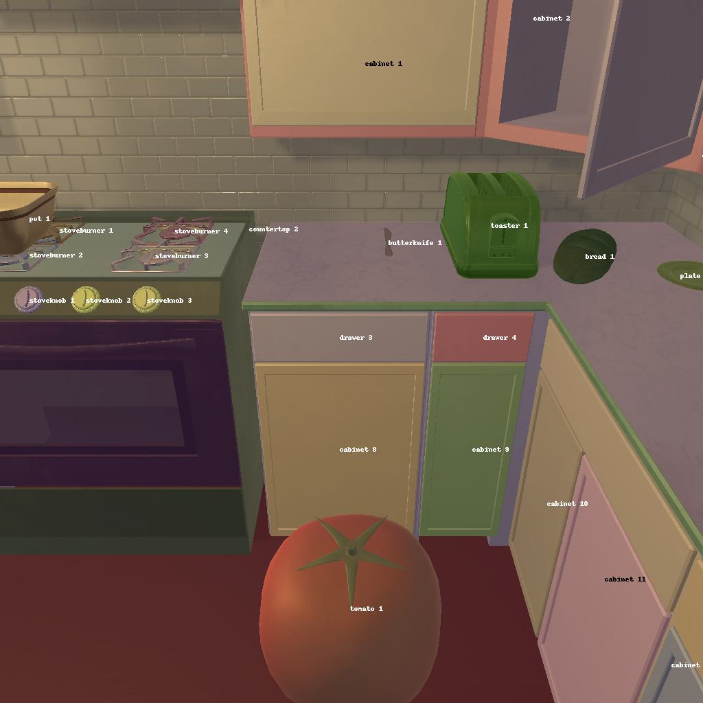
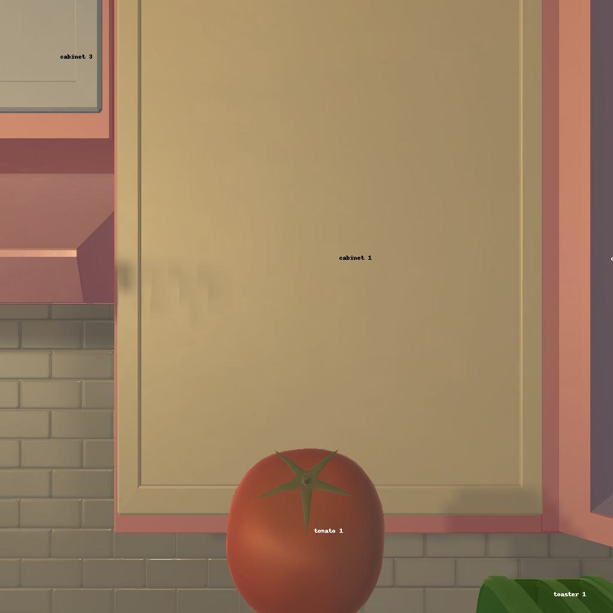

---------------------------------------------------------task: 29---------------------------------------------------------
--------------------------------------------------------------------------------------------------------------------------------------------------------------------
--------------------------------------------------------------------------------------------------------------------------------------------------------------------
Step:--------------------------------------------------------------------------8-------------------------------------------------------------------------------
----------------------------------------
VLM Prompt:
Image1:
Image2:
**Instruction**
1. Analyze the provided image to identify all visible household objects, focusing on those relevant to the task description "find two tomato and put them in countertop."
2. Use the analysis of the image and the task hint "The agent must find an object of the desired type, pick it up, find the correct location to place it, put it down there, then look for another object of the desired type, pick it up, return to previous location, and put it down there with the other object." to answer the question: what is the most reasonable action in the choices for the task description "find two tomato and put them in countertop"?
4. Decide and write the answer using the template: The answer is: (i): , where i is the real number. If there is no desired object in the image, search every place based on **Initial Observation** to find the object. And if no one is exactly correct, choose a similar answer.
**Initial Observation**
You are in the middle of a room. Looking quickly around you, you can see cabinet (1-20), toaster (1), microwave (1), garbagecan (1), countertop (1-2), drawer (1-4), stoveburner (1-4), sinkbasin (1), sink (1), fridge (1), diningtable (1), coffeemachine (1)
**Answer Choices**
(1): go to cabinet 1
(2): go to toaster 1
(3): go to cabinet 4
(4): go to cabinet 5
(5): go to microwave 1
(6): go to garbagecan 1
(7): go to countertop 1
(8): go to drawer 1
(9): go to cabinet 6
(10): go to cabinet 7
(11): go to drawer 2
(12): go to stoveburner 1
(13): go to stoveburner 2
(14): go to countertop 2
(15): go to cabinet 8
(16): go to cabinet 9
(17): go to cabinet 10
(18): go to drawer 3
(19): go to drawer 4
(20): go to stoveburner 3
(21): go to stoveburner 4
(22): go to cabinet 11
(23): go to cabinet 12
(24): go to cabinet 13
(25): go to cabinet 14
(26): go to sinkbasin 1
(27): go to sink 1
(28): go to cabinet 15
(29): go to fridge 1
(30): go to cabinet 16
(31): go to cabinet 17
(32): go to cabinet 18
(33): go to cabinet 19
(34): go to diningtable 1
(35): go to coffeemachine 1
(36): go to cabinet 20
(37): open cabinet 3
(38): close cabinet 3
(39): put tomato 1 in/on cabinet 3
(40): examine tomato 1
(41): examine cabinet 3
**Answer**
Let's think step by step by following the instructions.
----------------------------------------
----------------------------------------
Original Response:
First, we need to find two tomatoes. In the image provided, we can see one tomato labeled as "tomato 1" on the countertop. There is no second tomato visible in the image. Therefore, we need to search other places to find the second tomato.
Given the task description "find two tomato and put them in countertop" and the task hint, the most reasonable first action would be to pick up the visible tomato and place it on the countertop.
However, the images provided only show one tomato, and it is already on the countertop. Therefore, we do not need to take any action with tomato 1 at this moment. Instead, we should focus on finding the second tomato.
The answer choices provided are all about going to a specific location or interacting with objects. Since there is no direct action related to picking up a tomato, we should choose an action that could lead us to find the second tomato.
Based on the **Initial Observation**, we should search the cabinets as tomatoes are often stored in cabinets in a kitchen setting.
The answer is: (1): go to cabinet 1, as it is the first cabinet in the sequence, and we have no information about the location of the second tomato. If the second tomato is not in cabinet 1, we would continue searching the cabinets sequentially.
----------------------------------------
----------------------------------------
>>> Refine Original VLM Response and Get Pure Action: go to cabinet 1, as it is the first cabinet in the sequence, and we have no information about the location of the second tomato
----------------------------------------
-----------------------------------------------------------------
Running time: 20.420854091644287 seconds
Total Money: 14.546880000000005
-----------------------------------------------------------------
-----------------------------------------------------------------
Text Observation:Nothing happens.
-----------------------------------------------------------------
UNSUCCEED